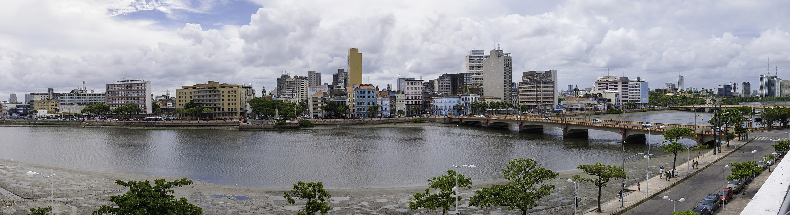
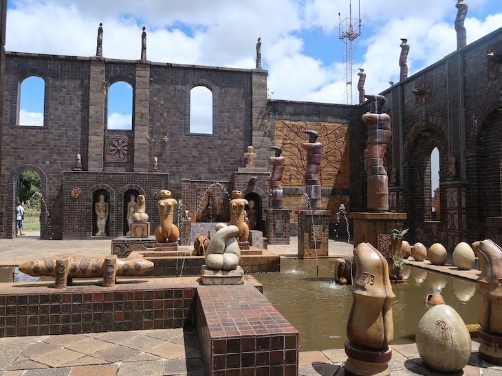

Pontos Turísticos Recife Antigo

O nome oficial é Bairro do Recife, mas todo mundo chama mesmo é de Recife Antigo – ou, quando começa a intimidade, só “Antigo” mesmo. Charles Darwin, Santos Dumont e Dom Pedro II estão entre os personagens ilustres que já desembarcaram num dos pedaços mais interessantes da capital pernambucana, e você não vai perder a chance de entrar pra essa lista, né? :P Afinal, esse bairro por si só já faz valer no mínimo um dia na cidade antes de você correr pras praias dos arredores. Sei que sou suspeita pra falar, mas pode confiar.
Além de caminhar sem rumo pelas ruas de paralelepípedos, lembrando sempre de olhar pra cima pra paquerar os prédios históricos, um dia no Recife Antigo inclui um punhado de atrações massa, sem falar nos bons bares e restaurantes.
E apesar de ser um dos principais cartões postais recifenses, o bairro não é só pra turista ver: ele também é o maior polo tecnológico e um dos principais centros de lazer e cultura da cidade.
Agora que já conhecemos um pouco mais da história de Recife , é hora de vermos alguns outros pontos turísticos do Recife Antigo.
Capela Dourada

Uma das igrejas mais bonitas da capital, a Capela Dourada guarda muito da ostentação e da riqueza do Brasil colonial, com muitos detalhes em ouro, madeiras trabalhadas e pinturas sacras. Na verdade, a capela fica dentro do Convento e da Igreja de Santo Antônio, onde também está o Museu de Arte Sacra.
Perto dali, não deixe de conhecer o Convento de São Francisco, que compõe um belo conjunto arquitetônico com a Igreja de Nossa Senhora das Neves, a Capela de Santana e a Capela de São Roque.
Localização: Altura da rua Siqueira Campos, R. do Imperador Pedro II, S/N - Santo Antônio, Recife - PE, 50010-240
Telefone: 55 81 32240530
Oficina de Cerâmica Francisco Brennand

Um passeio altamente recomendado é uma visita até a Oficina de Cerâmica Francisco Brennand, que pertence ao próprio artista. O local foi transformado por ele em um museu a céu aberto, tem espaços para a exposição de suas obras e é a oficina de produção de uma das melhores cerâmicas do país.
Ainda com a chancela da família Brennand, o Instituto Ricardo Brennand é outra excelente alternativa para visitantes de todas as idades que apreciam arte, arquitetura e história. O acervo inclui exposições permanentes e temporárias de artistas nacionais e internacionais e um arsenal de armas, armaduras, tapetes e quadros da era medieval.
Localização: Propriedade Santos Cosme e Damião Rua Diogo de Vasconcelos, S/N - Várzea, Recife - PE, 50740-970
Telefone: +55 81 3271-2623; +55 81 3453-1326; +55 81 3272-5196